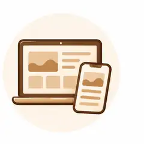

GEO Pass
Deine maschinenlesbare Expertenkarte. Kostenloser Einstieg, auch ohne eigene Website.
0 €
Beschreibung & Preise Drei Wege zu deiner digitalen Präsenz. Du entscheidest, womit du beginnst und wie schnell du weitermachst.
Deine maschinenlesbare Expertenkarte. Kostenloser Einstieg, auch ohne eigene Website.

Bis zu 500 Wörter, redaktionelle Freigabe und Veröffentlichung auf unabhängigen regionalen Plattformen.

Deine Website gehört dir. Ohne Agenturbindung. Ohne Baukasten-Abo.